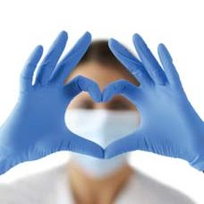
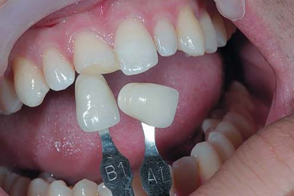
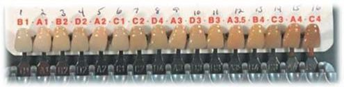
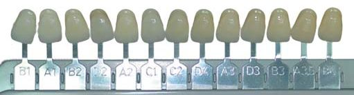
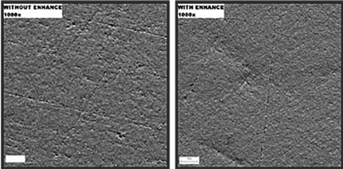
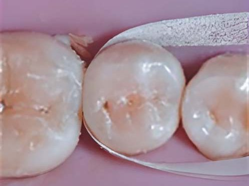

Матеріали Dentsply Sirona · журнал «ДентАрт» 2023 №4
Реставрація дефектів Класу II: досягнення ефективної естетики
Class II Restorations: Achieving Efficient Esthetics
Закінчення. Початок — у статті «Реставрація дефектів Класу II: важливість успішного відновлення, методи та етапи» (журнал «ДентАрт» № 3 за 2023 рік).
- Як повідомляється, понад 80 % пацієнтів знають про відмінність у кольорі між відреставрованими та сусідніми природними зубами.
- Дослідження засвідчують, що в середньому фінішна обробка та полірування займають 14 % загального часу при виконанні реставрацій Класу II.
Процес вибору відтінку
Зуб відпрепарований, ізоляція підтримується за рахунок внесення адгезиву і текучого матеріалу. Ми отримали міцне з’єднання із зубом, точний міжзубний контакт і контур, а також чудову адаптацію матеріалу в порожнині на перших 4 мм реставрації. Пора завершувати внесення реставраційного матеріалу та змоделювати первинну оклюзійну анатомію.
Клінічні завдання, пов’язані з кінцевим шаром/ами композиту, включають:
- вибір відтінку: практикуючі стоматологи мають велику кількість доступних для вибору відтінків композиту, але існує низка факторів, які слід враховувати, обираючи правильний;
- стабільність кольору: навіть якщо лікар відновить зуб відтінком, який добре відповідає прилеглій структурі зуба, зміна кольору матеріалу з часом може зробити реставрацію менш естетично привабливою для пацієнта.
Вибір композитного матеріалу
Ви стикаєтеся з багатьма варіантами, обираючи бажаний композитний матеріал. Ми знаємо, що передусім композит повинен мати характеристики, які відповідають вашим уподобанням (стійкість до усадки, відсутність прилипання до інструментів, бажаний рівень в’язкості). Хоча такі фізичні властивості, як стійкість до сколів, міцність на стискання і модуль пружності, важливі, але якщо композит надходить від авторитетного виробника, він, імовірно, буде відповідати цим вимогам. Тож якщо припустити, що ваш композитний матеріал має характеристики, які відповідають вашим уподобанням, і походить від авторитетного виробника, що ще вам слід враховувати?
Підбір відтінку
Підбір відтінку є досить складним завданням, на яке впливає багато факторів. Зокрема, значним фактором є генетична схильність того, хто підбирає відтінок. На щорічній зустрічі Американської стоматологічної асоціації було виявлено, що 13 % із 670 учасників, які були обстежені на гостроту кольорового зору, мали відхилення від норми.37 Інше дослідження засвідчило, що людське око є точним у виборі відтінку лише у 27 % випадків.38 Крім того, дальтонізм вражає понад 10 % чоловічого населення США.39 Незважаючи на цю статистику, пацієнти все ж очікують, що ви виконаєте реставрацію, яка буде непомітною (факт: 50 % переробок коронок є результатом неправильно підібраного кольору).39
Отже, дамо кілька корисних порад, про які слід пам’ятати, обираючи відповідний відтінок композитного матеріалу.
- Спочатку видаліть усі зовнішні елементи із зубної емалі, а якщо пацієнтка користується помадою, попросіть її стерти.
- Упорядкуйте шкалу відтінків за збільшенням яскравості (значення), а не за діапазоном кольорів (А. В. С. D). Таким чином, ви можете промахнутися вліво або вправо від відповідного відтінку, проте все ж таки виконати естетичну реставрацію (див. зображення).
- Завжди визначайте відтінок/ки, потрібні для реставрації, перед препаруванням, зіставляючи з вологим зубом. Під ізоляцією рабердамом протягом 60 хвилин дегідратований зуб може змінитися в кольорі аж на 6 відтінків.40
- Порівняйте колір зуба зі зразком зі шкали відтінків, використовуючи різні типи світла (природне світло, оглядове світло, кімнатне освітлення тощо). Спостереження за тим самим матеріалом/об’єктом за різних умов освітлення може змінити сприйняття кольору у деяких матеріалах — це явище, метамерія, призводить до того, що відтінок має різний вигляд через відмінність у тому, як тип світла поглинається та відбивається від матеріалу.41
- Погляньте на зразок відтінку та зуб лише на коротку мить, щоб уникнути втоми очей, яка може спотворити сприйняття кольору. Дайте відпочити очам, дивлячись на нейтральний сірий або білий фон.
- Якщо ви все ще не впевнені, який відтінок обрати, нанесіть невелику порцію композиту на сусідній зуб, щоб отримати найкращу відповідність.
Ефект хамелеона
Деякі композити мають ефект хамелеона у поєднанні з прилеглою структурою зуба, що може звести до мінімуму людські помилки у виборі відтінку і допомогти створити ідеальну естетику. Обираючи композит зі здатністю перетікання в кольорі подібно до хамелеона, ви можете бути впевнені, що коли ви змогли підібрати наближений відтінок, то здатність матеріалу підлаштуватися подбає про решту. Свідченням цього є дані про продаж композиту зі здатністю хамелеона, що є провідним на ринку: 75 % продажів припадає лише на 5 відтінків.42 Як можуть лише кілька відтінків охоплювати майже всі клінічні випадки? Якщо два відтінки, суміжні один з одним (зуб із композитом або композит із композитом), мають різницю Delta-E (різниця кольорів) меншу, ніж 3, то відмінність у кольорі важко розрізнити людському оку.43
Додатково, щоб покращити здатність підлаштовуватися в кольорі, показник заломлення світла (що описує, як світло проходить крізь матеріал) повинен припадати між емаллю (1,63) і дентином (1,54).44 На зображенні вище отвір, просвердлений у центрі кожного зразка, заповнений композитним матеріалом відтінку С2 з чудовим ефектом хамелеона. Зверніть увагу на його здатність легко зливатися з прилеглим кольором.



Стійкість до профарбовування
Профарбування композитних реставрацій може бути спричинене низкою факторів з боку пацієнта, матеріалу і навіть стоматолога. Харчові звички пацієнта можуть вплинути на відтінок матеріалу. Наприклад, регулярний вплив на реставрацію таких речовин, як червоне вино та кава, може призвести до посилення профарбовування композиту з часом. Згідно з останніми дослідженнями, вважається, що природа агломерації та розподілу композитного наповнювача в деяких матеріалах затримує барвники всередині, тобто ділянку профарбовування не можна відшліфувати з матеріалу. Якщо профарбування виникає по краях реставрації, це може бути трактовано як вторинний карієс.45 Це не тільки небажано з точки зору пацієнта, що стосується естетики, але також може призвести до передчасної заміни реставрації. Рекомендовано використовувати композитні матеріали з підвищеною стійкістю до профарбовування, а також належним чином провадити фінішну обробку та полірування реставрації для додаткового захисту.
Фінішна обробка
Продуктам фінішної обробки та полірування часто не приділяють особливої уваги, коли йдеться про покращення результатів та ефективності лікування. Витративши більше часу, ніж вам хотілося б, на коригування оклюзії та реконтуринг реставрації бором, ви, можливо, будете схильні просто швидко отримати блиск на поверхні, назвавши це виконаною роботою. Дослідження засвідчують, що такий підхід може не надати реставрації найкращого довгострокового прогнозу.
Щоб сповна відчути переваги правильного вибору матеріалу, важлива належна увага до фінішної обробки і полірування.
По-перше, слід розрізняти терміни «фінішна обробка» та «полірування». Можливо, у вашому арсеналі 3-4 продукти для фінішної обробки та полірування, які ви використовуєте після остаточного затвердіння композиту, щоб надати виконаній реставрації форму та блиск, перш ніж відпустити пацієнта. Хоча терміни «фінішна обробка» та «полірування» часто використовуються як синоніми, насправді вони мають різне значення.
«Фінішна обробка» означає уточнити анатомію і згладити поверхню реставрації, прибравши подряпини та нерівності. «Полірування» — це процес створення глянцю, тобто блиску, на поверхні реставрації. Чи обов’язкове те й інше? У звіті клініцистів Clinicians Report (CR) зазначено, що як «фінішна обробка», так і «полірування» реставрацій фронтальної групи зубів є надважливими, оскільки пацієнти вимагають бездоганної естетики та дзеркального блиску поверхні зубів на лінії усмішки. Однак для композитних реставрацій бічної групи зубів міцність і довговічність (покращені за рахунок відповідної «фінішної обробки») важливіші, ніж досягнення чудово відполірованої поверхні.46
Чому етап «фінішної обробки» має значення
У нещодавньому звіті CR зазначено, що «потенційно клініцисти можуть збільшити довговічність своїх реставрацій Класу II за допомогою належної техніки фінішної обробки».46 Гладенька поверхня після фінішної обробки мінімізує наявність нерівностей на поверхні, які можуть призвести до скупчення зубного нальоту, профарбовування, подразнення ясен, рецидиву карієсу і тактильного дискомфорту для пацієнта.47,48
Алмазні фінішні бори високоефективні у видаленні матеріалу, але залишають досить шорстку поверхню, яка потребує подальшої обробки перед поліруванням до остаточного блиску. Якщо, наприклад, після використання крупнозернистого алмазного бора застосувати полірувальну систему Enhance Pogo® (пропускаючи етап «фінішної обробки»), поверхня може мати блиск, бути глянцевою, але при великому збільшенні буде шорсткою і схильною до ретенції нальоту та профарбовування. І навпаки, якщо анатомію оклюзійної поверхні визначити за допомогою фінішного бора, а потім перед тим, як застосувати полірувальну систему, використати інструмент «для фінішної обробки» з меншою абразивністю для подальшого згладжування поверхні, то в результаті отримаємо більш гладеньку, блискучу поверхню, стійку до ретенції зубного нальоту та профарбовування.



1-ше зображення: етап полірування одразу після роботи з бором — залишаються подряпини; 2-ге зображення: після роботи з бором етап фінішної обробки, потім етап полірування — менше подряпин/більш гладенька поверхня.49
Підбір продукції для продуктивності та ефективності
Дослідження підтверджують, що в середньому етап фінішної обробки та полірування потребує близько 14 % від загального часу при виконанні реставрації Класу ІІ.36 Це досить багато! Ось кілька моментів, які слід враховувати, щоб скоротити час, що витрачається на цьому етапі, одночасно покращуючи клінічні результати.
- Яку матричну систему ви використовуєте? Ми всі знаємо про важливість створення щільного відконтурованого контактного пункту. Можливо, ви знайшли спосіб досягти контакту, але якщо матрична система, яку ви використовуєте, не щільно прилягає до країв і не створює точні контури, вам може знадобитися фінішна смужка міжапроксимально, щоб згладити та сформувати цю поверхню. Однак якщо ви зішліфуєте занадто багато, контактний пункт може бути втрачений, і вам доведеться переробити реставрацію. Позбавтеся страждань на цьому етапі та заощадьте час, переконавшись, що ви використовуєте гарну матричну систему.
- Який композит ви використовуєте? У дослідженні, в якому вивчалися композити та системи полірування, що постачаються одним виробником, було зроблено такий висновок: «Слід використовувати систему для фінішної обробки/полірування тієї ж компанії, що й композитний матеріал, оскільки разом вони показали гарні результати порівняно з іншими системами».50
- Що відбувається, коли інструмент для фінішної обробки, яким ви працюєте, торкається до прилеглих тканин зуба? Можливо, ви використовуєте твердосплавні бори та кількаетапні дискові системи на певному етапі свого протоколу фінішної обробки і полірування, однак дослідження свідчать, що хоча ці інструменти можуть зменшити нерівності на поверхні композиту, подряпини емалі цими інструментами є неминучими (ще один приклад ятрогенного ушкодження).51 Потім подряпини на емалі стають місцем скупчення бактерій. Тому ви можете обрати інструменти для фінішної обробки, які з меншою ймовірністю пошкодять емаль.
- Наскільки ефективним є ваш протокол фінішної обробки та полірування? Можливо, ви використовуєте кількаетапну дискову систему, яка складається з чотирьох дисків (грубоабразивний, середньої абразивності, дрібноабразивний, ультрадрібноабразивний). Рекомендована послідовність використання цих дисків, починаючи з грубої абразивності та поступово просуваючись до наддрібної абразивності, є необхідною для належного згладжування та полірування поверхні, але це також вимагає багато часу.51 Перші 2 диски призначені для виконання етапу «фінішної обробки», а два наступних — для «полірування». Ми знаємо, що зазвичай використовують не всі 4 диски, у звіті CR, згаданому вище, зазначено, що для реставрацій Класу II використання перших двох дисків для отримання гладенької поверхні пріоритетніше, ніж використання інших двох для отримання блиску поверхні. Чи не було б добре, якби був продукт, здатний об’єднати роботу, виконану першими двома «фінішними» дисками, в один крок, щоб заощадити час?
Складні та ідеальні клінічні ситуації
Близько 25 % клінічних випадків є скомпрометованими, в яких композитний матеріал не буде матеріалом вибору (пацієнти похилого віку, діти, Клас V без країв емалі та ін.).
Щоб реставрація Класу II була рентабельною, успішною та довговічною, стоматолог повинен подолати багато клінічних проблем, таких як ізоляція, відкриті міжзубні контакти, некоректна анатомія, негерметичне крайовe прилягання пломби, післяопераційна чутливість, профарбовування по краю пломби, рецидив карієсу і перелом.53 Іноді з боку пацієнта виникають проблеми, з якими стикається стоматолог, наприклад, недостатня гігієна ротової порожнини або непереносність часозатратності на лікування (відчуття дискомфорту під час лікування). Такі складні клінічні ситуації, як зазначені, або випадки, коли край дефекту міститься в дентині чи цементі, або коли ізоляція є проблематичною, становлять приблизно 25 % усіх випадків.52
Вибір матеріалу для виконання реставрації Класу ІІ бічної групи зубів визначається клінічною ситуацією та певними факторами з анамнезу пацієнта. На основі оцінки клінічних факторів і факторів з анамнезу пацієнта клінічну ситуацію можна класифікувати або як ідеальну, або як складну. Дослідження засвідчують, що в ідеальній клінічній ситуації найважливішим фактором успіху є адаптація реставраційного матеріалу до підготовленої основи.52 У випадку складної клінічної картини найважливішим фактором успіху є стійкість матеріалу до вологи.52
За ідеальних клінічних умов відпрепарований зуб можна ефективно ізолювати протягом усього лікування, також наявна емалева межа, яка чітко візуалізується. Крім того, пацієнт повинен мати гарну гігієну ротової порожнини та комфортно почуватися під час лікування, тобто пацієнт має змогу залишати рота відкритим, дихати носом і контролювати свій язик.
Складні клінічні умови — це клінічні ситуації, коли можливість ізолювати зуб скомпрометована, що зумовлено його локалізацією у ротовій порожнині, коли край дефекту міститься під яснами, переважно в дентині або цементі. Крім того, клінічна ситуація є складною, якщо пацієнт має проблеми з гігієною ротової порожнини або коли для нього тривале лікування є некомфортним через неможливість тримати рота відкритим, дихати носом або контролювати язик. Наявність будь-якого з цих факторів призведе до того, що клінічна ситуація буде вважатися складною. За оцінками, принаймні 25 % усіх випадків відновлення у прямій техніці є складними.52 Виходячи з практичного досвіду, кількість складних клінічних випадків, що зустрічаються, може бути значно більшою.
На сьогодні існує три види матеріалів, які зазвичай використовуються для відновлення бічної групи зубів: композит, GI/RMGI та амальгама.
Композити є матеріалом вибору, коли естетика, здатність витримувати оклюзійне навантаження і довговічність мають значення. Для успішної роботи з композитом потрібна надійна ізоляція протягом усього лікування та достатньою мірою збережений емалевий край. Також необхідно, щоб пацієнт міг комфортно почуватися протягом усього часу лікування і мав гарну гігієну ротової порожнини.
Матеріали GI/RMGI використовуються, коли ізоляція є складною у виконанні або скомпрометованою, а край дефекту міститься переважно в дентині або цементі. Компроміс при використанні матеріалів GI/RMGI полягає в тому, що виконана реставрація не витримуватиме оклюзійного навантаження та, ймовірно, потребуватиме частої заміни (згідно з дослідженнями, щорічна частота невдач становить 25,8 %54), а також матеріал не буде естетично відповідати прилеглим зубним тканинам.
Амальгама може бути використана у випадку, коли ізоляція неможлива, а естетика не є першочерговим завданням. Реставрація з амальгами, ймовірно, буде довговічною, але багато стоматологічних клінік і пацієнтів вважають за краще не використовувати амальгаму через різні причини.
Чому ізоляція настільки важлива?
Використання композитів вимагає ідеальних клінічних умов для забезпечення успішного результату. Але коли клінічні умови не ідеальні, коли каріозний процес поширюється нижче цементно-емалевої межі або коли ізоляція майже немислима, який матеріал має бути обраним? Часто стоматологи звертаються до амальгами або склоіономерних цементів через їх надійність у подібних ситуаціях. Та нещодавні дослідження свідчать, що слід ретельно подумати, чи використовувати склоіономерні цементи для реставрацій Класу ІІ — через їх погану вклеюваність у порожнину, вірогідність виникнення вторинного карієсу та профарбовування, які виявляють під час наступних контрольних оглядів.55 А у випадку з новими біологічно активними реставраційними матеріалами дослідження виявили, що адгезії цих так званих матеріалів, що самовклеюються, не існує.56 Тож композит продовжує залишатися матеріалом вибору. Однак при використанні композитних матеріалів ізоляція має вирішальне значення для успіху.57 У випадку, якщо відбулася контамінація реставраційного поля вологою, фізичні властивості та кінцевий успіх реставрації можуть бути скомпрометовані.58
На сьогодні 97 % клініцистів стверджують, що досягти належної ізоляції при лікуванні дефекту Класу ІІ складно принаймні в одному з 10 клінічних випадків,59 що обґрунтовує потребу в кращій альтернативі доступним на сьогодні матеріалам для складних клінічних випадків.
Переклад — Анна і Юлія Бодаква.
Література
- 2010 Survey of Dental Practice — Income from the Private Practice of Dentistry. http://www.ada.org/1444.aspx
- Centers for Disease Control and Prevention. Oral and Dental Health, United States: 2011, table 98.
- American Dental Association Procedure Recap Report (2006).
- J Dent 2001; 29: 317–324; Overton J. D., Sullivan D. J. Early failure of Class II resin composite versus Class II amalgam restorations placed by dental students. J Dent Educ 2012; 76: 338–340.
- Durable Bonds at the Adhesive/Dentin Interface. Braz Dent Sci. 2012; 15(1): 4–18.
- 2013 Levin Group Annual Practice Research Report. Dental Economics, November 2013.
- 2003 Public Opinion Survey: Oral Health of the US Population. American Dental Association.
- DENTSPLY Caulk survey June 5, 2012, n=297.
- Torrey Trisha (2010). What is the definition of Iatrogenic? Health: Patient Empowerment (about.com).
- Christensen, Gordon J. (2012). Protecting the Adjacent Tooth. Clinician’s Report — Volume 5, Issue 11.
- Gilbert G. H., Litaker M. S., Pihlstrom D. J., Amundson C. W., Gordan V. V. Rubberdam use during routine operative dentistry procedures: findings from The Dental PBRN. Oper Dent 2010; 35(5): 491–499.
- DentalTown (2012). Restorative Dentistry. Monthly Poll: What is the most challenging part of a Class II Restoration?
- Rosenburg, Jeffrey M. (2013). Dentistry Today. Making Contact: A Method for Restoring Adjacent Posterior Direct Resin.
- Buonocore M. G. A simple method of increasing the adhesion of acrylic filling materials to enamel surfaces. J Dent Res. 1955; 34(6): 849–853.
- Perdigão J., Geraldeli S., Hodges J. S. Total-etch versus self-etch adhesive: effect on postoperative sensitivity. JADA 2003; 134(12): 1621–1629.
- Perdigão J. New developments in dental adhesion. Dent Clin North Am. 2007 Apr; 51(2): 333–357.
- Am J Dent (2010). Dec; 23(6): 335–340.
- Heintze S. D., Rousson V. Clinical effectiveness of direct class II restorations — a meta-analysis. J Adhes Dent 2012; 14(5): 407–431.
- Porto I. C. Post-operative sensitivity in direct composite restorations: Clinical practice guidelines. Indian Journal of Restorative Dentistry 2012; 1(1): 1–12.
- J Can Dent Assoc 2011; 77: b9.
- Reis, Andre F. (2014). Film Thickness FE-SEM evaluation of resin-dentin interfaces produced by Universal Adhesives.
- Posterior Composite Resins — A Current Assessment.
- Dentistry iQ. Everyone Wins with Quadrant Dentistry.
- Council on Scientific Affairs of the American Dental Association. Spring 2009; 4(2).
- Jackson R. D. Placing posterior composites: increasing efficiency. Dent Today 2011; 30(4): 126, 128, 130–131.
- Cavalcante L. M., Schneider L. F. J., Silikas N. Shrinkage Stresses Generated during Resin-Composite Applications: A Review.
- Dinc G., Kamburoglu K., Kursun S., Oztas B. (2012). Radiopacity evaluation of composite restorative resins and bonding agents using digital and film x-ray systems. Eur J Dent. Apr 2012; 6(2): 115–122.
- Price R., Felix C. (2010). Factors Affecting the Energy Delivered to Simulated Class I and Class V Preparations. JCDA Applied Research.
- Boksman L., Santos G. C. (2012). Principles of Light Curing. Inside Dentistry, Volume 8, Issue 3.
- Strassler H., Price R. (2014). Understanding Light Curing Part 1. Dentistry Today Continuing Education Course 173.
- Irradiance Value Comparison among commercially available curing lights. BlueLight Analytics (2012).
- Strassler H. E., Felix C. (2013). Quantifying the clinical implications of the ISO standards used in light curing. IADR Poster.
- Price and Felix IADR 2010 Barcelona #467. Quantifying Light Energy Delivered to a Class I Restoration.
- Ruggerberg F., Ferracane J., Price R. (2013). What is the latest thinking on fast-curing composites? Inside Dentistry, Volume 9, Issue 2.
- Joiner A. Tooth colour: a review of the literature. J Dent. 2004; 32(Suppl. 1): 3–12.
- DENTSPLY Caulk Procedure Timing Breakdown Study. Data on file.
- Moser J. B., Wozniak W. T., Naleway C. A. et al. Color vision in dentistry: a survey. JADA 1985; 110: 509–510.
- Visual and Spectrophotometric Shade Analysis of Human Teeth. J Dent Res, August 2002; 81: 578–582.
- Perry, Ron. Increasing Accuracy and Esthetics Through Digital Shade-Matching.
- Haywood Van (2009). In Office Bleaching: Lights, Applications, and Outcomes.
- Lowe Robert A. (2010). Composite Restorations: Subtleties in Shade and Technique.
- Strategic Data Marketing (2013). Data on File.
- Jaju R. A., Nagai S., Karimbux N., Da Silva J. D. Evaluating tooth color matching ability of dental students. J Dent Educ. 2010; 74(9): 1002–1010.
- Meng Z., Yao X. S., Yao H., Liang Y., Liu T., Li Y., Wang G., Lan S. Measurement of the refractive index of human teeth by optical coherence tomography. J Biomed Opt. 2009 May–Jun; 14(3): 034010.
- Ren Y.-F., Feng L., Serban D., Malmstrom H. S. (2012). Effects of common beverage colorants on color stability of dental composite resins: the utility of a thermocycling stain challenge model in vitro.
- Christensen G. J. (2014). Simplifying your Class II Composite Finishing Technique. Clinicians Report, Volume 7, Issue 4.
- Morgan M. Finishing and polishing of direct posterior resin restorations. Pract Proced Aesthet Dent 2004; 16(3): 211–217.
- Lu H., Roeder L. B., Lei L., Powers J. M. Effect of surface roughness on stain resistance of dental resin composites. J Esthet Restor Dent 2005; 17: 102–109.
- DENTSPLY Caulk Surface Roughness Testing and SEM photo analysis. Data on file.
- Berger S. B., Palialol A. R., Cavalli V., Giannini M. Surface roughness and staining susceptibility of composite resins after finishing and polishing. J Esthet Restor Dent 2011; 23(1): 34–43.
- Ulusoy C. Comparison of finishing and polishing systems for residual removal after debonding. J Appl Oral Sci. 2009; 17(3).
- Key Group International Survey, 2019, n=300 (Brazil, France, Italy, Germany, USA).
- Shuman I. Excellence in class II direct composite restorations. Dent Today. 2007; 26: 102–105.
- Hickel et al. Longevity of occlusally-stressed restorations in posterior primary teeth. Am J Dent. 2005.
- Balkaya H., Arslan S. A Two-year Clinical Comparison of Three Different Restorative Materials in Class II Cavities. Oper Dent. 2020 Jan/Feb; 45(1): E32–E42.
- Perdigão J. New developments in dental adhesion. Dent Clin North Am 2007 Apr; 51(2): 333–357.
- Benetti A. R., Michou S., Larsen L., Peutzfeldt A., Pallesen U., van Dijken J. W. V. Adhesion and marginal adaptation of a claimed bioactive, restorative material. Biomater Investig Dent. 2019 Dec 12; 6(1): 90–98.
- Gilbert G. H., Litaker M. S., Pihlstrom D. J., Amundson C. W., Gordan V. V. Rubber dam use during routine operative dentistry procedures: findings from The Dental PBRN. Oper Dent 2010; 35(5): 491–499.
- Dental Learning Systems, Direct Restoratives Survey, May 2016. N=14.